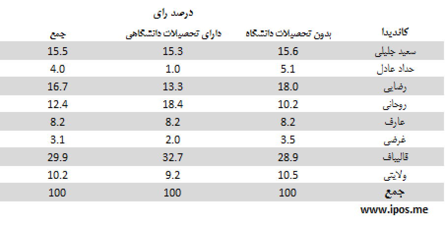

مهمترین یافتهها:
- مهمترین یافتههای آخرین نظرسنجی iPOS ، نشان میدهد که آرای دو نامزد نزدیک به اصلاحطلبان رو به افزایش است و آرای نامزدهای اصولگرا رو به کاهش.
- در میان اصولگرایان، آرای آقای قالیباف کماکان رو به نزول است. آرای ایشان از میزان 39 درصدی 16 خرداد به 29.8 تنزل کرده است. در همین فاصله زمانی، روند نزولی آرای آقایان ولایتی و حدادعادل نیز کماکان ادامه داشته است. آرای این دو به ترتیب از 11.5 به 10.1 و از 4.4 به 3.9 رسیده است.
- در مقابل، آرای آقایان روحانی و عارف، دو نامزد نزدیک به اصلاحطلبان، در حال افزایش بوده است. آرای آقای روحانی در همین فاصله با افزایشی بیش از 50 درصد از 8.1 درصد به 12.4 درصد رسیده است. آرای آقای عارف نیز با رشدی 40 درصدی از 5.8 به 8.1 درصد اافزایش یافته است. با این تفاوت که رشد آرای آقای روحانی ثابت اما رشد آرای آقای عارف با نوسان روبرو بوده است.
- از میان اصولگرایان تنها آرای آقای جلیلی همچنان در حال رشد با آهنگی ملایم است. آرای آقای جلیلی از 16 خرداد تا زمان انجام این نظرسنجی از 13.9 به 15.7 افزایش یافته است.
- آرای آقای رضایی در همین فاصله زمانی ثبات نشان می دهد و در نزدیکی 17 درصد حرکت میکند. آرای آقای غرضی نیز با توجه به قلت قدر مطلق آن قابل ارزیابی دقیق نیست.
- این تغییرات مربوط به نظر کسانی است که میگویند در انتخابات شرکت میکنند و برای رای به نامزد مورد علاقه تصمیم گرفتهاند. نسبت خود این گروه از افراد نیز رو به افزایش بوده است. به این دلیل که میزان پاسخگویانی که میگویند در انتخابات شرکت میکنند اما برای رای به نامزد مورد علاقه خود هنوز نتوانستهاند تصمیمی بگیرند، از 60 درصد در 16 خرداد به 52 درصد در آخرین نظرسنجی کاهش یافته است.
- از میان کل پاسخگویانی که میگویند در انتخابات شرکت میکنند، گذشته از 52 درصدی که تصمیم مشخصی اتخاد نکردهاند و 7 درصدی که به افراد دیگری تمایل داشته یا از اعلام نظر خود خودداری کردهاند، آقای قالیباف هنوز با در اختیار داشتن 12 درصد آرا در صدر قرار دارد. پس از ایشان آقاین رضایی و جلیلی به ترتیب با 6.9 و 6.5 درصد در ردههای دوم و سوم قرار میگیرند. پس از اینان، آقایان روحانی و ولایتی به ترتیب با 5.1 و 4و2 درصد، آقای عارف با 3.3 درصد قرار دارند آقایان حدادعادل و غرضی کماکان با آرایی کمتر از 2 درصد در انتهای فهرست نامزدها جای گرفتهاند.
- اگر از میان پاسخگویانی که میگویند در انتخابات شرکت میکنند فقط کسانی در نظر گرفته شوند که تاکنون تصمیم گیری کرده و از میان 8 نامزد موجود یک نفر را انتخاب کرده اند، آقای قالیباف با 29.8 درصد بالاتر از سایر نامزدها قرار دارند. بعد از ایشان، آقایان رضایی با 16.9 درصد، جلیلی با 15.7 درصد، روحانی با 12.4، ولایتی با 10.11 درصد، درصد و عارف با 8.1 درصد قرار داردند. آقایان حدادعادل و غرضی به ترتیب با 3.9 و 3.1 درصد آرا در دو رتبهی آخر قرار میگیرند.
سئوال: اگر قرار بود همین امروز در انتخابات ریاست جمهوری شرکت کنید به کدام یک از کاندیداها رای میدادید؟

این جدول نشان میدهد پاسخدهندگانی که میگویند در انتخابات شرکت میکنند، از نظر تصمیمگیری برای رای دادن در چه و ضعیتهایی قرار دارند.
سئوال: اگر قرار بود همین امروز در انتخابات ریاست جمهوری شرکت کنید به کدام یک از کاندیداها رای میدادید؟

این جدول نشان میدهد از میان پاسخدهندگانی که میگویند در انتخابات شرکت میکنند، و از میان 8 نامزد موجود یک نفر را انتخاب کردهاند، هریک از نامزدها چه میزان رای دارند.
جدول زیر میزان اقبال به نامزدها را بر اساس جنسیت (زن و مرد) نشان میدهد:

در جدول زیر میزان آرای نامزدها در میان دو گروه سنی (کمتر از 40 سال و بیشتر از 40 سال) مقایسه شده است:

انتخاب رای دهندگان در جدول زیر بر اساس سطح تحصیلات (بدون تحصیلات دانشگاهی و دارای تحصیلات دانشگاهی) مقایسه شده است:

تحلیل:
میزان مشارکت
- میزان مشارکت در این نظرسنجی همچنان بالای 70 درصد است. اگر درصد بالایی از کسانی را که از پاسخ به سوالات ما امتناع کردهاند، معادل کسانی فرض کنیم که در انتخابات شرکت نخواهند کرد و به همین دلیل از پاسخ به سوالات مربوط به انتخابات سرباززدهاند، آنگاه میزان مشارکت به مقدار قابل توجهی کاهش خواهد یافت. با نزدیک شدن به روزهای انتخابات می توان تصویر دقیق تری از میزان مشارکت احتمالی به دست داد.
- با این همه باید افزود میزان مشارکت بالا در این نظرسنجی لزوماً معادل همان میزان از نسبت شرکت کنندگان در روز انتخابات نیست. در نظرسنجیها، معمولاً میزان «اعلام مشارکت»، بیش از میزان «مشارکت عملی» در روز انتخابات است. تفاوت «مشارکت اعلامی» و «مشارکت عملی» فقط به ایران اختصاص ندارد.
- اعلام مشارکت بالا، فقط جنبهی سیاسی هم ندارد که ناشی از ترس در پاسخ به این سوال باشد، بلکه می تواند ناشی از این واقعیت ساده باشد که وقتی از مردم برای شرکت در انتخابات سوال می شود آنان فقط باید تمایل خود را «اعلام» کنند اما نیاز به «عمل» (شامل آماده شدن، رفت و آمد، هزینههای زمانی و مادی) برای رای دادن ندارند. حال آن که در روز رای گیری آنان باید همه این اعمال را انجام دهند، که به سادگی اعلام یک کلمه «بله» نیست.
- اعلام مشارکت بالا، همچنین می تواند تا حدی نیز ناشی از ملاحظات روانشناسی سیاسیِ حاکم بر جامعهی ایران باشد، ملاحظاتی که می تواند مردم را به همنوایی با خواست حکومت مبنی بر لزوم شرکت در انتخابات سوق دهد. این همنوایی می تواند نوعی اریبی روشمند در داده های مربوط به میزان مشارکت ایجاد کند.
- با توجه به همهی این ملاحظات ارقام میزان مشارکت در این نظرسنجی را باید با احتیاط تفسیر کرد.
رای به نامزدها
- جدول زیر آرای منفی نامزدها را نشان میدهد:

- جدول بالا نشاندهندهی توزیع نظر پاسخگویان است هنگامی که از آنان سوال شده است به کدامیک از 8 نامزد حاضر نیستند به هیچوجه رای دهند.
- تحلیل آرای منفی نامزدها بر اساس نظر پاسخگویان از شکلگیری دو بلوک متضاد در انتهای یک طیف و دو بلوک میانی حکایت میکند.
- برا این اساس حدود 30.7 درصد آز پاسخگویان حاضر نیستند به آقاین جلیلی و حداد رای دهند و 30.1 درصد نیز حاضر نیستند به آقایان روحانی و عارف رای دهند. در مقایسه میتوان دید که 11.2 درصد از پاسخگویان میگویند به آقایان قالیباف و ولایتی رای نخواهند و 8.4 درصد به آقای رضایی.
- به این ترتیب میتوان گفت رای منفی آقای رضایی از رای منفی سه بلوک دیگر کمتر است و ظاهرا دو بلوک اول، یعنی آقایان جلیلی و حداد از یک طرف و روحانی و عارف از طرف دیگر در مقابل هم قرار دارند در حالی که بلوک اقایان قالیباف و ولایتی در تقابل با گروه دیگری در نظر گرفته نشده است. همین وضعیت در مورد اقای رضایی نیز صادق است.
- تحلیل آرای منفی نامزدها نیازمند بررسیهای دقیقتر دو متغییری است که از مجال این بخش خارج است.
- تحلیل آرای نامزدها بر اساس جنسیت، سن، تحصیلات، از نظر آماری رابطهی معنی داری بین این عوامل و رای به نامزدها را نشان نمیدهد. به علاوه این رابطهها سیال است و در بسیاری از موارد روز به روز تغییراتی را نشان میدهد که حاکی از تاثیر نمونه بر آن است. با این همه برخی تفاوتها، با رعایت این ملاحظات، قابل ذکر است.
- بررسی آرای نامزدها بر اساس جنسیت پاسخگویان نشان می دهد از میان کسانی که به آقایان قالیباف و حداد رای می دهند، نسبت زنان اندکی بیشتر از مردان است.
- .همچنین می توان گفت، در میان رای دهندگان به آقایان جلیلی، رضایی و قالیباف، افراد کمتر از 40 سال نسبت بیشتری از افراد بالای 40 سال دارند.
- از نظر سطح تحصیلات، میان رای دهندگان به آقایان روحانی و قالیباف افراد با تحصیلات دانشگاهی، به نسبت بیشتری به به چشم میخورند.
روش اجرای نظرسنجی
نظرسنجیهای iPOS به شیوه چرخشی (Rolling) چهار روزه انجام میشود.
نمونهگیری به صورت مرحلهای طبقهبندی شده در سطح استانها است. دارندگان تلفنهای ثابت و همراه در سطح کل کشور واحد نمونه را تشکیل میدهند. حجم نمونه 1067 نفر است.
یافتههای نظرسنجی را می توان با اطمینان 95 درصد و در فاصلهی اطمینان 3 درصد به کل افراد بالای 18 سال ایرانی ساکن ایران تعمیم داد.
مصاحبهها به صورت تلفنی و با پرسشگران آموزش دیده در طول ساعات فعال هرروز انجام میشود.